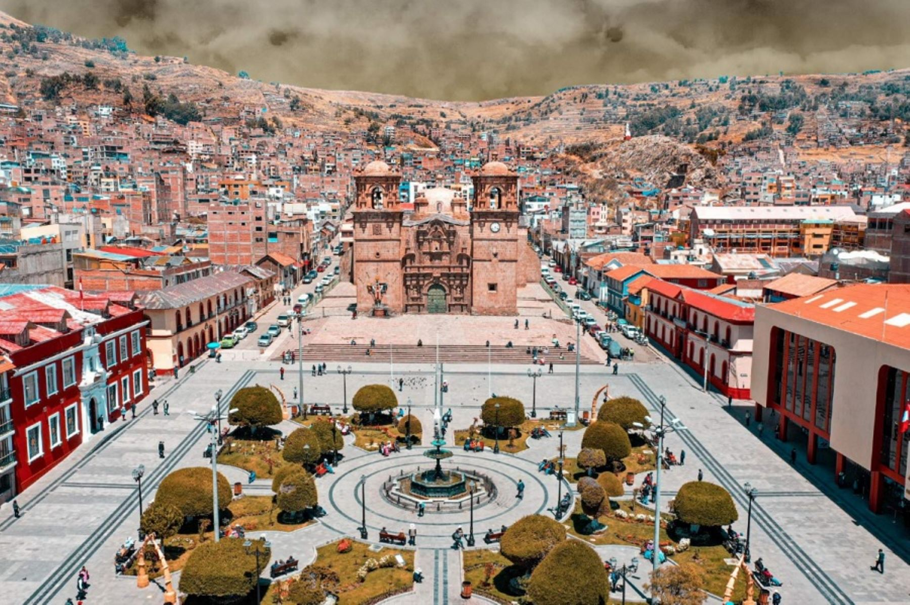
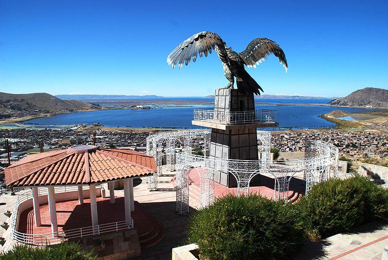
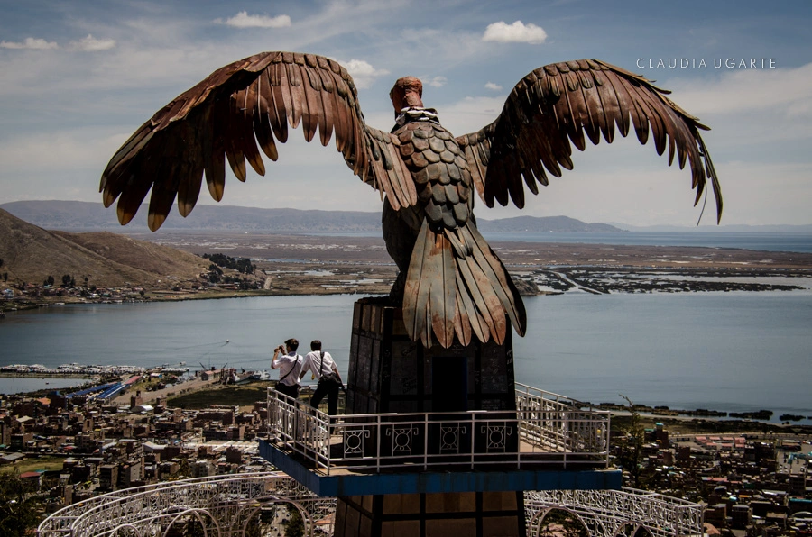

Puno: La capital folclórica del Perú
Puno es una ciudad ubicada a orillas del majestuoso Lago Titicaca, el lago navegable más alto del mundo. Conocida como la capital folclórica del Perú, Puno es un destino vibrante lleno de cultura, tradiciones y festivales, entre los que destaca la famosa Festividad de la Virgen de la Candelaria.
Historia
Fundada en 1668 por el virrey Conde de Lemos, Puno ha sido un importante centro cultural y comercial. La región ha estado habitada desde tiempos preincaicos por civilizaciones como los Uros, los Tiahuanaco y los Lupacas. Su conexión con el Lago Titicaca y su legado indígena e hispano han convertido a Puno en un destino de gran importancia histórica y cultural.



Horarios y Ubicación
- Ubicación: Ciudad de Puno, región de Puno, Perú.
- Horarios de visita: Acceso libre durante todo el día.
- Costo de entrada: Dependiendo del atractivo turístico, algunos sitios pueden requerir una tarifa de ingreso.
Consejos para Visitantes
- Prepárate para la altitud: Puno se encuentra a más de 3,800 m.s.n.m., por lo que es recomendable aclimatarse y beber mate de coca.
- Viste ropa abrigadora: Las noches pueden ser frías debido a la altitud.
- No te pierdas el Lago Titicaca: Visita las islas flotantes de los Uros, Taquile y Amantaní.
- Disfruta de la gastronomía local: Prueba platos típicos como la trucha frita y la sopa de quinua.
- Explora la cultura: Si visitas en febrero, no te pierdas la Festividad de la Virgen de la Candelaria, una de las celebraciones más importantes del Perú.